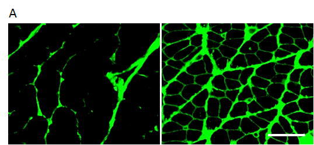
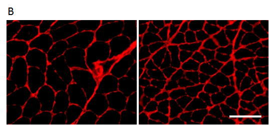
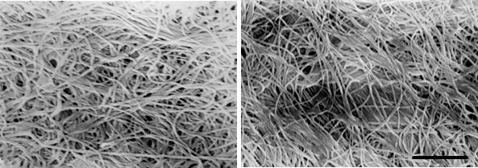
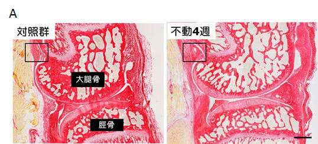
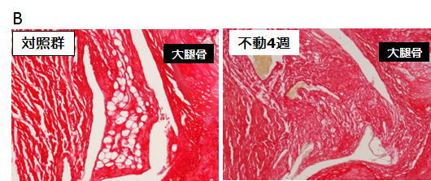
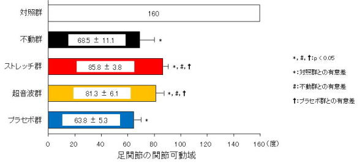
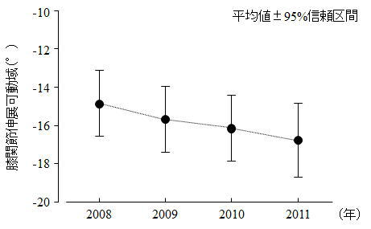

THEME 01
関節拘縮の発生メカニズムの解明と
関節拘縮の発生メカニズムの解明と
リハビリテーションの効果に関する研究
関節拘縮は長期安静臥床や痛み、麻痺に伴う関節不動化によって発症し、日常生活動作に多大な悪影響を及ぼす。しかしその発生メカニズムに関する研究は十分に進んでいない。当研究室では関節周囲軟部組織（皮膚・筋・関節包）の変化と拘縮発症の関連性を、動物モデルを用いて組織・分子レベルから検討している。
基礎研究：関節周囲組織の変化
（1）皮膚性拘縮
不動化ラットの皮膚では、真皮から皮下組織にかけて線維性結合組織が過剰増生（線維化）することを確認。ヘマトキシリン & エオジン染色により対照群と不動4週後の変化を可視化した。
（2）筋性拘縮
タイプⅠ・Ⅲコラーゲンの過剰増生と筋内膜コラーゲン線維網の配列変化を確認。蛍光免疫染色および走査電子顕微鏡像によって構造的変化を明らかにした。
（3）関節性拘縮
後方関節包の滑膜下層で線維化が発生し、関節包自体の肥厚も認められた。ピクロシリウスレッド染色により関節全体と拡大像を提示した。
治療介入研究
ラットヒラメ筋へのストレッチングと超音波照射により、筋内膜コラーゲン線維網の配列変化を抑制し、関節可動域制限の進行抑制効果を確認した。
臨床研究
青梅慶友病院入院患者236名（平均年齢90.4±6.9歳）を対象に、チームアプローチ（理学療法・運動プログラム・他動関節運動）を実施。膝関節伸展可動域は3年間で平均1.9°の減少にとどめることができた。
関連画像

皮膚性拘縮：HE染色（不動化ラット）

筋性拘縮：タイプⅠコラーゲン染色

筋性拘縮：タイプⅢコラーゲン染色

コラーゲン線維（走査電子顕微鏡）

関節性拘縮：膝関節（ピクロシリウスレッド染色）

関節包の肥厚（拡大像）

ストレッチング・超音波照射の効果

チームアプローチによる関節可動域変化（青梅慶友病院）